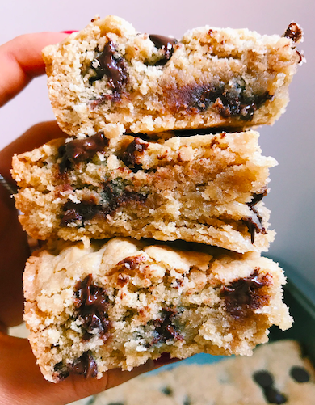

These recipes are my all time favorite! Some are harder than others. I hope you enjoy making them.
Ingredients
Steps
Preheat your oven to 350 degrees and line a 8x8 pan with parchment paper or grease well with olive oil. Whisk together the eggs, olive oil, tahini, and vanilla extract together until smooth. Add in the coconut sugar and mix until well incorporated. In a separate bowl, whisk together the oat flour, coconut flour, baking powder, and salt. Add the dry ingredients into the wet ingredients. Fold in raspberries + chocolate chips, reserving some for the top if desired. Transfer to the baking pan and add chocolate chips/raspberries on top. Bake in the oven for about 35-40 minutes or until the edges turn golden and a toothpick inserted in the center of the blondies comes out clean. Let cool before slicing and serving.